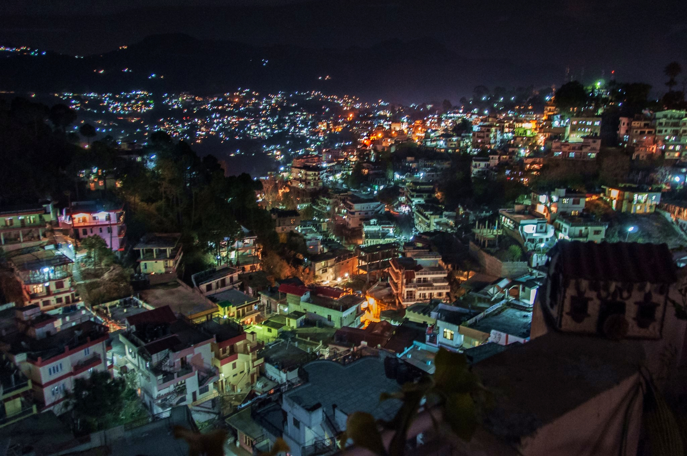

SOLAN:
Solan Known for its huge agricultural produces for Tomatoes and Mushrooms, Solan is often described as the Mushroom City of India and The City of Red Gold. The city is located at an average elevation of 1,600 meters above sea level and is the largest city in the state of Himachal Pradesh. Being a Gurkha capital of formerly known Princely state of Bhagat, the city is a cultural cauldron that contains a fine brew of culture, arts, religion and history. The city is full of a huge number of forts, monuments, temples, churches and various other places that can interest the tourists that visit Solan. Here is the list of the best places you must visit in Solan.
Famous Places Around Solan :
Sharad Purnima Fair:
Dev Bara Fair:
ul style="list-style-type: square;">It is held at Mangal Kandar for three days from 21st March to 23rd March.
This place is about 81 kms. from Shimla.
The fair is held in the honour of ‘Devta Baru’.
The deity is brought to Mangal Kandar on the 20th March.
The idols of the deity are adorned with ornaments and cloth pieces.
It is cooked and distributed among those present.
On the 21st March, prayer is held.
After this, the deity is carried on the shoulders by two persons and a dance is held.
This continues for three days.
On 23rd March Devta Baru is taken back.
Koti Fair:
Koti fair is held at Koti village in Solan tahsil in the month of May/June for a day and a night.
The fair is held in the honour of ‘Mira Devi’ whose temple is situated here.
Sometimes a baby show is also arranged in the fair and the children who are healthy and in good physique are given gifts.
Shoolini Fair:
Solan Known for its huge agricultural produces for Tomatoes and Mushrooms, Solan is often described as the Mushroom City of India and The City of Red Gold. The city is located at an average elevation of 1,600 meters above sea level and is the largest city in the state of Himachal Pradesh. Being a Gurkha capital of formerly known Princely state of Bhagat, the city is a cultural cauldron that contains a fine brew of culture, arts, religion and history. The city is full of a huge number of forts, monuments, temples, churches and various other places that can interest the tourists that visit Solan. Here is the list of the best places you must visit in Solan.

Famous Places Around Solan :
Sharad Purnima Fair:
- This fair is held at Unchagaon (Kunihar) in a ground surrounding the tank for two days in the month of January-February.
- It starts from ‘Puranmashi’ and lasts uptil the next day.
- It is held in the honour of ‘Sharad Purnima’ and ‘Devta Dano dev’ whose temple is on the bank of the tank.
- Worship is done on ‘Puranmashi’ and ‘Sankrant’ by a Brahmin.

Dev Bara Fair:
ul style="list-style-type: square;">
Koti Fair:
Shoolini Fair:
- Shoolini fair is held in the honour of Shoolini Devi whose temple is situated in the southern end of Solan.
- The fair is celebrated every year on the 2nd Sunday of June for four days.
- Wrestling is a prominent feature of the Solan fair.